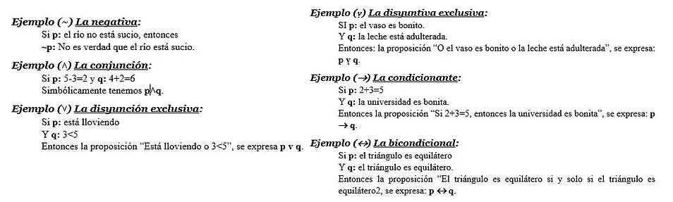

Fundamentos de Lógica-Matemática
Fundamentos de Lógica Matemática
Elementos de la Lógica Matemática
Lógica matemática
Definición
Es una ciencia particular que se ocupa preferentemente del análisis de las reglas deductivas, las cuales son concebidas en forma gráfica o con símbolos.
Trata de métodos de razonamiento, proporciona reglas y técnicas para determinar si es o no válido un argumento dado.
La lógica matemática estudia la inferencia mediante la construcción de sistemas formales como la lógica proposicional, la lógica de primer orden o la lógica modal. Estos sistemas capturan las características esenciales de las inferencias válidas en los lenguajes naturales, pero al ser estructuras formales susceptibles de análisis matemático, permiten realizar demostraciones rigurosas sobre ellas.

Ejemplo
Todos los hombres son mortales
Sócrates es un hombre
Sócrates es Mortal
Todos los As son B
C es un A
C es un B
Enunciados
Son la unidad mínima del análisis lógico, representan al conjunto de palabras con la que se expone o plantea un problema matemático o cualquier cuestión. Un enunciado matemático se refiere a menudo como un enunciado numérico. Los enunciados numéricos representan una ecuación o desigualdad o incluyen número o variables y operandos; suma, resta, multiplicación o división.
Un enunciado es abierto si tiene una o más variables. La presencia de variables hace que sea imposible tener una respuesta definitiva, sin saber lo que la variable representa, por lo que está abierto a la interpretación.
Alternativamente, los enunciados matemáticos se pueden cerrar. Un enunciado matemático cerrado no tiene incógnitas.
Ejemplo
-
Un enunciado matemático cerrado es 2+2=4; todos los valores están dados.
-
Un enunciado cerrado puede ser verdadero o falso conforme se escriba.
Proposiciones
Una proposición es un enunciado u oración declarativa de la cual se puede afirmar que es falsa o verdadera, pero no ambas cosas a la vez.
Pueden ser simples (consta de una sola oración) o compuesta (consta de dos o más proposiciones simples, unidas o conectadas por una o varias palabras de enlace).
Las proposiciones se representan con letras minúsculas llamadas variables lógica como; p, q, r, s, …
Ejemplo
-Proposiciones simples:
Ocho es un número par.
El hombre tiene tres pies.
-Proposiciones compuestas:
Jaime estudia y trabaja.
Si llueve entonces te mojas.

Concepto
Son las unidades más básicas de todo el conocimiento humano. El concepto es el pensamiento de las notas esenciales de un objeto, entendiendo por esenciales las notas que son forzosas para que el objeto sea; es decir, las notas cuya desaparición (la de cualquiera de ellas) implica la desaparición del objeto. “Triangulo” es el pensamiento de una “figura de tres lados que se cortan dos a dos”.
-
Conceptos negativos: amoral, inmoral, inhumano, insensato.
-
Conceptos positivos: cualidades, bondad, santidad.
-
Conceptos privativos: ausencias o carencias.
Conectivas
Son símbolos usados para combinar proposiciones dadas, produciendo así otras llamadas proposiciones compuestas.
Las conectivas lógicas más usadas son:

Ejemplo
Axiomas
Axioma o postulado es una proposición inicial la cual se asume como verdadera. El conjunto de postulado de los cuales se desprenden las demás proposiciones de un sistema se llama conjuntos de postulados del sistema. En este, uno de los axiomas no debe ser deducibles de otros.
Los axiomas de toda teoría matemática tienen que ser:
-
Compatibles: a partir de ellos no tiene que ser posible deducir una contradicción.
-
Independiente: ningún axioma se debe poder deducir a partir del resto de ellos (habría redundancia de axiomas).
-
Suficientes: a partir de ellos tiene que ser posible deducir todas las propiedades que necesitamos satisfagan los objetos de nuestra teoría.
Ejemplo
Axioma euclidiano: el todo es igual a la suma de las partes. El todo es mayor que cada una de las partes.


Obra publicada con Licencia Creative Commons Reconocimiento Compartir igual 4.0